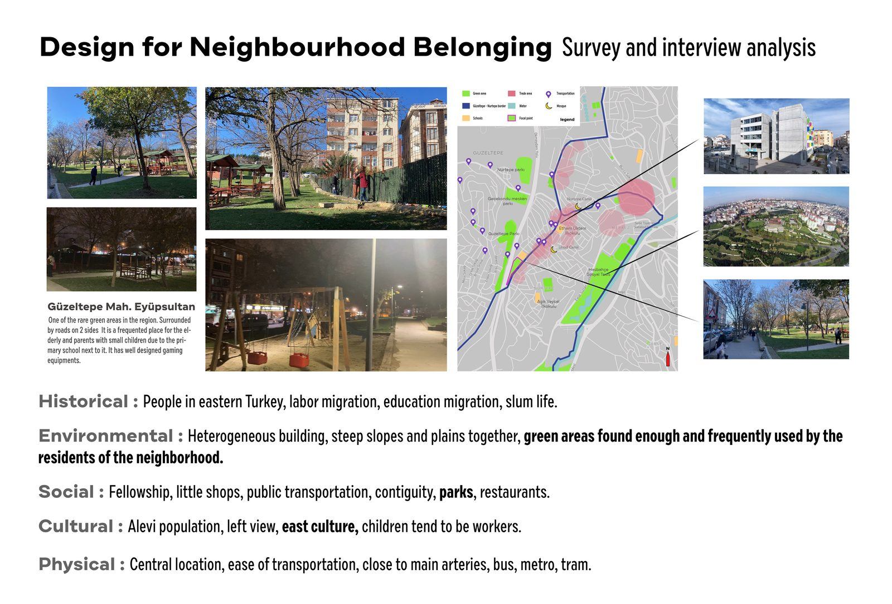
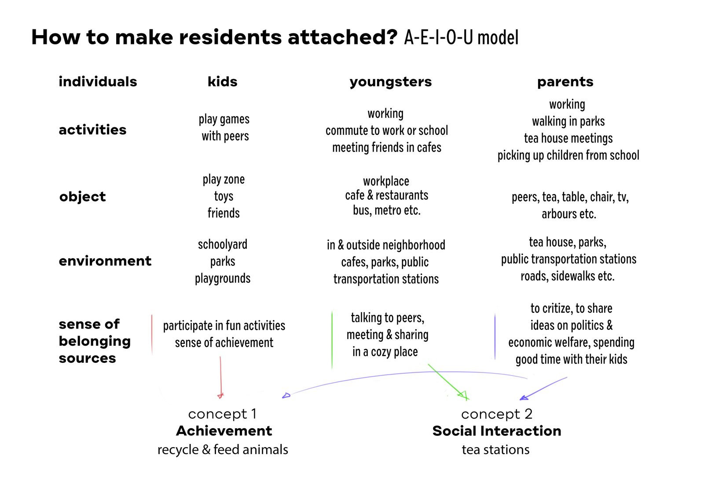
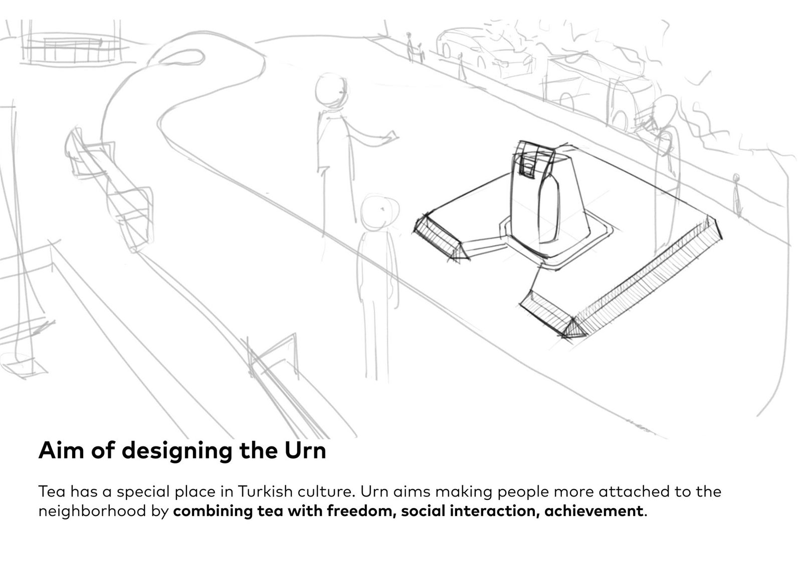
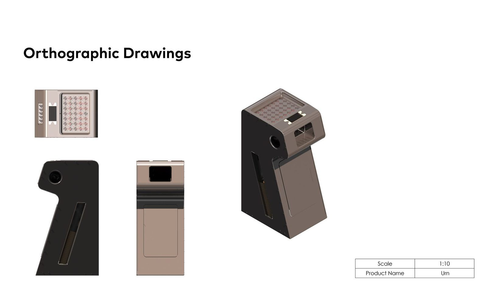
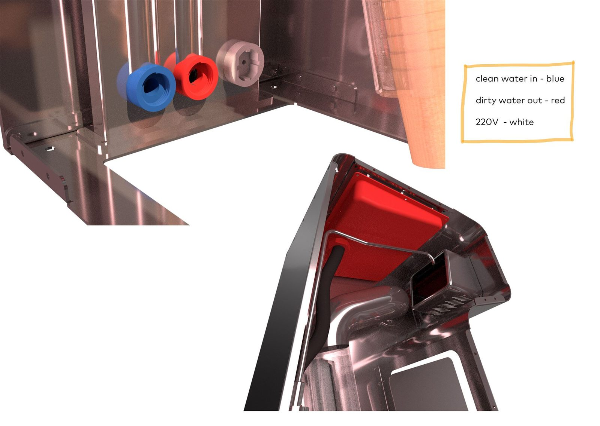
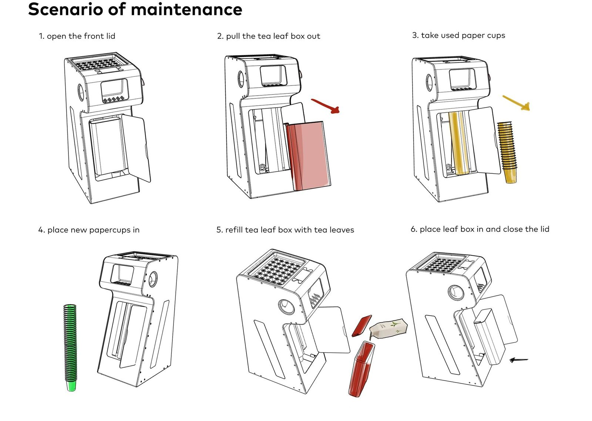

Urn: Mahalle Aidiyeti için Sıcak İçecek İstasyonu
Çayın Türk kültüründeki sohbet başlatıcı rolünden yola çıkan bu sistem, toplu taşıma kartıyla çalışıyor ve mahalledeki günlük buluşma noktalarını güçlendirmeyi hedefliyor.
Bir mahalle, komşuluğunu kaybediyor
Çalışma, İstanbul Güzeltepe Mahallesi'nde (Eyüpsultan) gerçek bir saha araştırmasıyla başladı: işçi ve eğitim göçüyle şekillenmiş, yeşil alanı yeterli ama organik bir buluşma noktası olmayan bir bölge. Soru şuydu: sakinleri birbirine ve mahalleye daha bağlı hissettirecek bir ürün nasıl tasarlanır?

AEIOU modeliyle kullanıcı analizi
Mahalle sakinleri üç grupta incelendi: çocuklar, gençler ve ebeveynler. Her grup için aktiviteler, kullandıkları nesneler, bulundukları ortamlar ve aidiyet hissi kaynakları AEIOU çerçevesiyle (Activities, Environment, Interactions, Objects, Users) haritalandı. Analiz iki potansiyel konsept yönü ortaya çıkardı: "başarı hissi" (geri dönüşüm, hayvan besleme) ve "sosyal etkileşim" (çay istasyonları).

Neyin doğru olduğuna nasıl karar verdik
| Kriter | Gereksinim |
|---|---|
| Erişim modeli | Toplu taşıma kartıyla çalışmalı, nakit veya ayrı bir ödeme sistemi gerektirmemeli |
| Dış mekan dayanıklılığı | Hava koşullarına karşı paslanmaz çelik gövde |
| Hijyen | Tek kullanımlık kağıt bardak dağıtımı, temassız kullanım |
| Bakım kolaylığı | Çay ve bardak dolumu özel araç gerektirmeden yapılabilmeli |
| Sosyal etki | Bekleme ve oturma alanı sunarak sosyal etkileşimi teşvik etmeli |
Sosyal etkileşim yönü seçildi
İki yön arasından "sosyal etkileşim" konsepti geliştirmeye değer bulundu, çünkü çay Türk kültüründe zaten var olan bir sosyal ritüel ve yeni bir davranış öğretmek yerine mevcut bir alışkanlığı güçlendiriyor. Sistem, bir tramvay veya otobüs durağı gibi mahallenin günlük güzergâhına yerleşecek şekilde tasarlandı.

Tek üniteden küçük bir yapıya
İlk eskizler tek bir dağıtım ünitesini değil, oturma ve bekleme işlevini de barındıran küçük bir yapıyı araştırdı: yüksek bir dağıtım kulesi, üzerine oturulabilen bir köprü/bank elemanı ve yanında bir oyun masası. Bu geniş araştırma, sonraki aşamada tek bir ünite etrafında sadeleştirildi.

Ölçekli teknik tanım
Sadeleştirilmiş form, 1:10 ölçekli ortografik çizimlerle teknik olarak tanımlandı: ön, yan ve üst görünüşler ile birlikte bir izometrik referans render.

Su ve elektrik hatları görünür şekilde tanımlandı
Sıcak içecek istasyonu olduğu için sistem, temiz su girişi, kirli su çıkışı ve 220V elektrik bağlantısını barındırıyor. Bu üç hat, montaj ve bakım sırasında karıştırılmayacak şekilde renk koduyla işaretlendi: temiz su mavi, kirli su kırmızı, elektrik beyaz.

Bakım senaryosu, tasarımın merkezinde
Sistemin en somut mühendislik katmanı, bakım personelinin günlük dolum rutini: ön kapağı açmak, kullanılmış çay kutusunu çıkarmak, kullanılmış bardakları almak, yenilerini yerleştirmek, kutuyu doldurmak ve kapağı kapatmak. Bu altı adım, ürünün üretim sonrası yaşamını sonradan düşünülen bir detay değil, tasarımın parçası yapıyor.

Yapıdan tek üniteye
En büyük iterasyon, kapsam daraltmasıydı: ilk eskizlerdeki çok işlevli yapı (kule, bank, oyun masası) tek bir dağıtım ünitesine indirgendi. Bu karar, üretilebilirliği artırdı ve tasarımın bakım senaryosu gibi tek bir katmana derinlemesine odaklanmasını sağladı.
Sonuç

Üretim düşüncesiyle tasarlanmış bir sistem
Proje bir CAD render setinde kalmadı. Ana gövde, kapaklar, drenaj tepsileri, çay kutusu ve bağlantı elemanları için malzeme ve üretim yöntemi (lazer kesim paslanmaz sac, enjeksiyon kalıplama polikarbonat, ekstrüzyon) tek tek tanımlandı. Konseptin gerçek bir üretim listesine dönüşmesinin somut bir örneği.